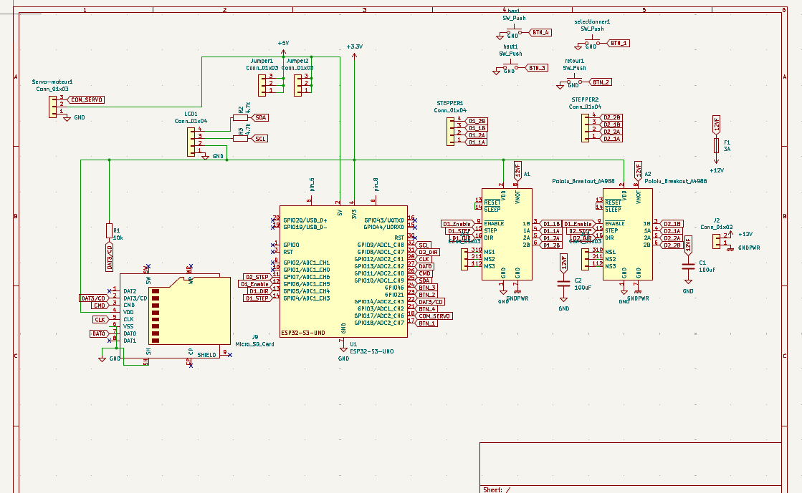

Schéma électronique du Shield pour (ESP32-UNO)
Pour remplacer le CNC Shield V3, nous avons conçu (sous demande de nos professeurs) une carte d'extension sur-mesure au format "UNO", spécialement pensée pour accueillir la puissance de calcul d'un microcontrôleur ESP32.

1. La Gestion des Alimentations (Séparation Logique/Puissance)
Notre carte gère deux circuits d'alimentation bien distincts pour protéger l'électronique sensible des retours de courant des moteurs :
- La partie Logique (5V / 3.3V) : Le cerveau (ESP32-UNO) et les périphériques (comme le Servomoteur Z) sont alimentés directement via la connexion USB reliée au PC.
- La partie Puissance (12V) : Une alimentation externe dédiée est branchée sur le connecteur J2 (GNDPWR / +12V) pour fournir le courant nécessaire aux moteurs NEMA 17.
2. Commande des Moteurs (Drivers A4988)
Les signaux de commande (STEP, DIR, ENABLE) sont envoyés par l'ESP32 en 3.3V logique vers les drivers. Pour gagner en précision, nous avons routé les broches de sélection de mode (MS1, MS2, MS3) avec un système de cavaliers (Jumpers), permettant de configurer facilement le Micro-stepping (division des pas de base du moteur).
3. Périphériques et Extensions
Le schéma montre que cette carte vas regrouper différentes fonctionnalités :
- Lecteur Micro-SD (Interface SPI) : Intégration d'un module SD avec une résistance de tirage (Pull-up) de 10kΩ sur la ligne DAT3 pour la stabilité des données.
- Interface de navigation : Intégration directe de 4 boutons poussoirs (Haut, Bas, Sélection, Retour) et d'un connecteur I2C pour un écran OLED, permettant un pilotage sans ordinateur.
- Boutons de contrôle locaux : 4 boutons poussoirs (BTN_1 à BTN_4) reliés à la masse, utilisant les résistances pull-up internes de l'ESP32.
- Stockage : Un slot MicroSD est prévu pour charger les fichiers G-Code directement sur la machine.